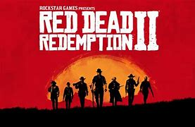

"Red Dead Redemption 2" es una obra maestra de la narrativa y la inmersión en el salvaje oeste. Ambientado en un mundo impresionante y detallado, el juego sigue la historia de Arthur Morgan, un forajido en una época de cambios y decadencia. La trama cautivadora y los personajes complejos llevan a los jugadores a través de una montaña rusa de emociones y decisiones morales. Con una jugabilidad profunda que incluye exploración, combate, caza y mucho más, cada momento en el juego se siente significativo y con peso. Además, los impresionantes gráficos y la increíble atención al detalle hacen que cada rincón del mundo se sienta vivo y vibrante. En resumen, "Red Dead Redemption 2" es una experiencia magistral que redefine lo que es posible en los videojuegos, ofreciendo una aventura que perdura mucho después de que se apaga la consola.
